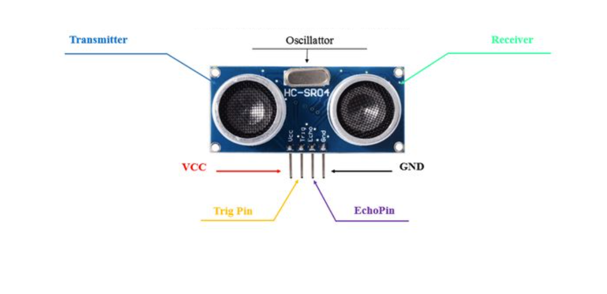
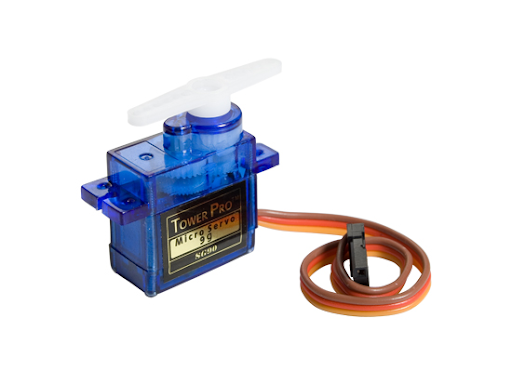
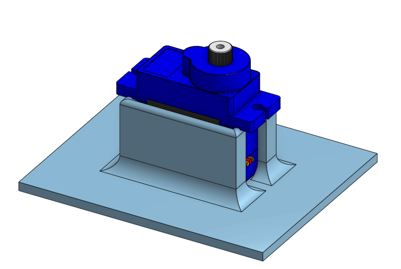
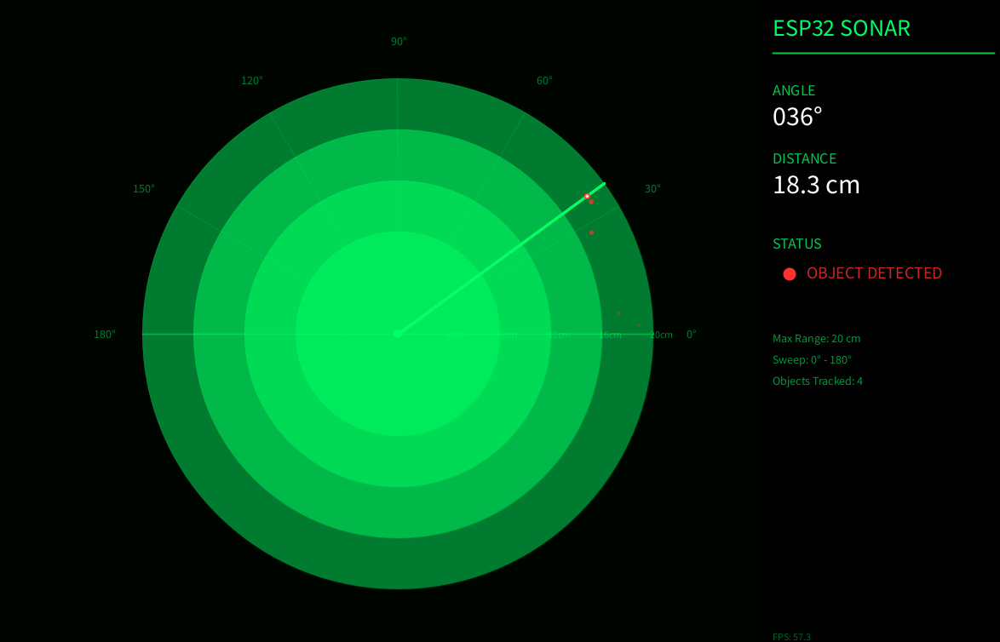
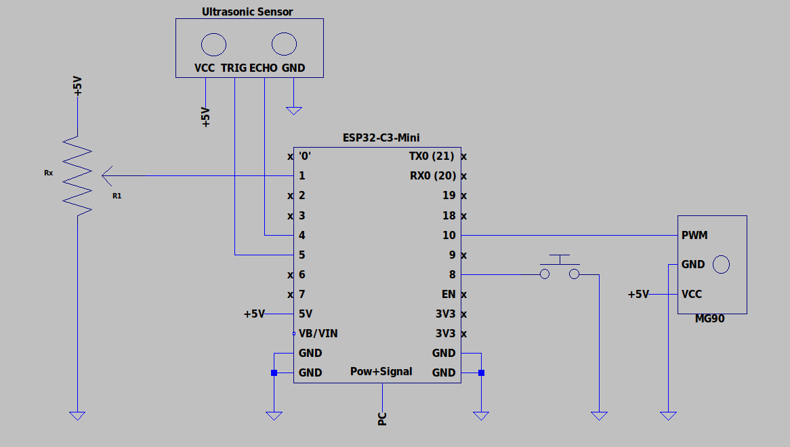

Project 4
Arduino Radar
By Patrick Cabanban
Overview
You will program an ESP32 to control a servo with various sensors and inputs. At each checkpoint, you will explore the core functions of servos and ultrasonic distance sensors. You will also get more practice with microcontrollers (digital input/output, pulse width modulation, and analog-to-digital conversion) and potentiometers. You will also display the sensor readings in a Processing radar display.
Concepts
ESP32 Guide
It is crucial that you have followed the steps in our ESP32 Guide to set up and learn how to program the ESP32. Visit the ESP32 Guide here or by clicking "ESP32 Guide" on the top navigation bar.
Pinout
Thinking about using a pin but you don't know what it does? Refer to the ESP32 Board pinout diagram.

- NC stands for No Connect, and these pins should be left unconnected at all times.
- GPIO stands for a General Purpose Input/Output pin and can be used to send or read signals.
- ADC stands for analog-to-digital converter and it reads the input voltage and makes a digital number to represent that amount of voltage.
- The ~ symbol represents pins that are PWM (Pulse Width Modulation) capable.
Ultrasonic Sensor
The ultrasonic sensor module (commonly the HC-SR04 )is a distance-measuring device widely used in embedded systems. It works by emitting an ultrasonic sound wave (at around 40 kHz) from its trigger (TRIG) pin and then listening for the echo reflected off nearby objects using its echo (ECHO) pin. The time it takes for the sound wave to return is measured by the microcontroller, which is used to calculate the distance using the formula:

A demo of using our provided ultrasonic sensor is found below:
-
Trig pinis in charge of sending a signal to the ultrasonic sensor to emit a burst of ultrasonic sound waves -
Echo pinis in charge of being pulled to HIGH for the same duration equal to the time it takes the ultrasonic pulse to reach a surface and return to the sensor. -
pulseInmeasures how long the ECHO pin was set high -
Delayensures that the trig pulse is a burst
const int trigPin = 5;
const int echoPin = 4;
void setup() {
Serial.begin(115200);
pinMode(trigPin, OUTPUT);
pinMode(echoPin, INPUT);
}
void loop() {
// Trigger pulse
digitalWrite(trigPin, LOW);
delayMicroseconds(100);
digitalWrite(trigPin, HIGH);
delayMicroseconds(100);
digitalWrite(trigPin, LOW);
long duration = pulseIn(echoPin, HIGH); // Takes measurement of pulse in microseconds
long distance = duration / 58.0; // conversion to cm
Serial.print("Distance: ");
Serial.println(distance);
delay(1000);
}
Note that the material and the angle of the object the wave is bouncing off matter for how effectively the echo pin can receive the signal. Materials like sponges or even your hand aren’t great at reflecting the waves.
Using it with ESP32
The ultrasonic sensor is actually rated for 5V, which means it is advised to use a voltage divider network on
the GPIO pins that it connects to. This is because constant 5V exposure to the ESP32
Servo
A servo motor is a type of motor that converts electrical energy into mechanical energy to achieve precise control. As seen in the image below, various arms can be attached to the splined gear on the top of the motor for different functions. In this project, you will be controlling the position of the servo to scan for objects with an ultrasonic sensor.
The micro servo we will be using is the SG90. You will use it to rotate the ultrasonic sensor from 0-180°.

As shown in the image above, the servo motor has three different wires; the power (red), ground (brown), and pulse-width modulation (orange) wires. The power and ground wires are used to supply the servo motor with power, while the pulse-width modulation (PWM) wire is used to feed a varying PWM signal that determines the servo's position.
A demo of using out provided servo is found below:
-
Servo your_servo_nameis used to initialize the physical servo object in your code. Keep in mind that you can name your servo to whatever you’d like. -
your_servo_name.attach(int servoPin)attaches the servo object to a pin with min max values to set the axis of rotation -
your_servo_name.write()can be used to set the servo to any angle between0-180
#include <ESP32Servo.h>
// Assign variable to pin number of Servo’s PWM pin
int servoPin = 10;
// Initialize servo object with name myServo
Servo myServo;
void setup() {
// Attach object myServo to the physical servo
myServo.attach(servoPin);
}
void loop() {
// Writes a 0 degree angle to the servo
myServo.write(0);
delay(1000);
// Writes a 90 degree angle to the servo
myServo.write(90);
delay(1000);
// Writes a 180 degree angle to the servo
myServo.write(180);
delay(1000);
}
Potentiometer
A potentiometer is a three-terminal variable resistor. We will use it as a voltage divider, a circuit which accepts a supply voltage and outputs a voltage which is a fraction of the supply voltage. The voltage of the potentiometer's output pin ranges between the VCC and GND pin voltages, depending on the dial's position.

How it Works
We just referred to the potentiometer as a kind of resistor. Why? Internally, a resistive strip connects its VCC and GND pins, and a rotating wiper connects the output pin to the strip. The greater the distance along the strip between the wiper and the VCC pin, the greater the resistance between the wiper and VCC.

In this voltage divider configuration, the wiper reduces the voltage at the output pin the further it is turned clockwise (toward GND).
Using it with ESP32
We can connect the potentiometer's output pin to one of the ESP32's ADC pins (see its pinout
above).
The ADC pin is wired to the analog-to-digital converter (ADC)
inside the ESP32-C3 chip. The ADC is hardware that translates the analog signal to a discrete
digital signal. Using
analogRead(), we interpret the pin's analog voltage as
a
discrete integer in the range 0-4095.
Servo Assembly
To assemble the radar, secure the servo in the mount shown below. Attach the ultrasonic sensor to the servo arm using a suitable sensor mount. Make sure the sensor can rotate freely from 0-180° without pulling on the wires.
Download the servo base STL. The ultrasonic sensor mount is not included in the project files.

Software Installations
Servo Library
To download the servo library, click on the Library manager icon on the left panel of Arduino IDE, and type in “ESP32Servo.” The first result made by Kevin Harrington, John K. Bennett is the library we will be using to control the servo. Download the latest version of the arduino library and then you should be able to use the library’s already developed functions.
Processing Setup
- Download Processing and open the radar display sketch. Keep the sketch in a folder named
sonar_display. - Run the sketch once to print the available serial ports in the Processing console. Set
portNameto the port used by your ESP32 in Arduino IDE, then run the sketch again. - Close Arduino IDE's Serial Monitor before running the display. Only one program can use the serial port at a time.
The display shows the servo angle, distance, and objects detected within 20 cm. The Processing display is required for this project.

Requirements
Potentiometer-Controlled Servo
- You must build a circuit with a potentiometer that can control a servo.
- The user must be able to adjust the servo’s angle to any angle between 0-180° when turning a singular potentiometer dial.
- When turning a potentiometer in one way, the servo should approach 180°.
- When turning a potentiometer the other way, the servo should approach 0°.
- The circuit must be built on a breadboard.
Arduino Radar
- You must build a circuit with an ultrasonic sensor mounted on a servo.
- The servo must automatically sweep from 0-180° and back when the program starts.
- Press the button to switch to manual mode. Use the potentiometer to control the servo's angle. Press the button again to return to automatic mode, resetting the servo to 0° before resuming the sweep.
- The circuit must send the angle and distance readings to the Processing radar display in both modes. The display must show detected objects within its 20 cm range.
- The circuit must be built on a breadboard.
Parts
| Part Name | Qty |
|---|---|
| Jumper Wire | x? |
| Breadboard | 1 |
| Push Button | x1 |
| Servo and Ultrasonic Sensor Mounts | x? |
| Potentiometer, 10kΩ | 1 |
| Micro Servo, SG90 | 1 |
| Ultrasonic Sensor | 1 |
| ESP32 | 1 |
| Resistors for the ECHO voltage divider (1kΩ and two 1kΩ in series) | 3 |
| USB-A to USB-C Cable | 1 |
Schematics
Use the connections below for the radar. For Checkpoint 1, connect only the potentiometer and servo.
| Part | Connection |
|---|---|
| HC-SR04 | VCC to 5V; GND to GND; TRIG to GPIO 5; ECHO through the voltage divider below to GPIO 4. |
| SG90 Servo | Signal to GPIO 10; VCC to 5V; GND to shared ground. |
| Mode Button | One side to GPIO 8; the other to GND. Use INPUT_PULLUP in the code. |
| Potentiometer | VCC to 3.3V; GND to GND; wiper to GPIO 1. |
For the ECHO voltage divider, connect ECHO through a 1kΩ resistor to GPIO 4. From that junction, connect two 1kΩ resistors in series to GND. Do not connect the 5V ECHO signal directly to GPIO 4.
Use a stable 5V supply for the servo. External 5V power is recommended, and all grounds must be shared. Do not power the servo from the ESP32's 3.3V pin.

Instructions
Checkpoint 1
-
Build the potentiometer-controlled servo circuit from the connections above on your breadboard. Use GPIO 1 for the potentiometer and GPIO 10 for the servo.
Attach the one-sided arm attachment to the servo.
Use the pseudo code below to program a potentiometer to control a servo.These functions may be helpful:
Serial.begin(),pinMode(),analogRead(), and the servo fuctions above.#include <ESP32Servo.h> // Assign variable to pin number for Potentiometer // Assign variable to pin number of Servo’s PWM pin // Initialize servo object with your servo name void setup() { // Configure the Potentiometer's pin behavior to INPUT // Attach object of your servo name to the physical servo // Configure the Serial baud rate to 115200 } void loop() { // Read potentiometer pin value // Set and map servo angle to the potentiometer pin value } - Upload your sketch to the ESP32, and verify that the program executes as expected; the potentiometer should control the angle of the servo from 0°-180°.
Checkpoint 2
- Build the complete radar circuit from the connections above on your breadboard. Mount the ultrasonic sensor on the servo.
- Open the starter sketch in Arduino IDE. Complete the distance measurements and automatic sweep. The servo must reverse direction at 0° and 180°.
- Program the button to switch between automatic and manual modes once per press. When returning to automatic mode, reset the servo to 0° before resuming the sweep. The starter sketch's button handling is simplified; make sure holding the button does not repeatedly switch modes.
- Send each reading over Serial at 115200 baud in the format
angle,distance, followed by a newline. Measure distance in centimeters. Send -1 when no echo is received. The complete reference sketch demonstrates the required behavior. - Upload your sketch to the ESP32, and verify that the program executes as expected. Close Serial Monitor, then run the Processing sketch using the setup instructions above.
- Verify that the radar display follows the servo in both modes. Place an object less than 20 cm from the sensor and verify that the display shows the object and its distance.
Deliverables (Enrolled Students Only)
Students enrolled in the course must submit the following deliverables to the corresponding Canvas course assignment.
Place the following files in a single folder:
-
Video of the Potentiometer-Controlled Servo on a breadboard
In the video, showcase the 0-180° movement of the servo using a potentiometer.
-
Video of the Arduino Radar on a breadboard and the Processing display.
In the video, showcase automatic sweeping, button-controlled mode switching, manual control with the potentiometer, and object detection on the Processing display.
Compress the folder to a zip file and rename the file using the format “ops_project#_lastname_firstname.zip” Then, submit the zip file to the Project 4 Canvas assignment.